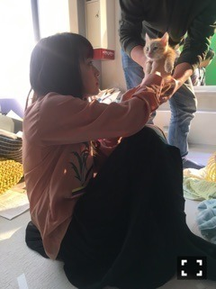

| 2017/01 13 Fri | 空に落ちる。757回目 |
PlayStation®4
重力アクションアドベンチャー
『GRAVITY DAZE 2』WebCM
#重力猫『GRAVITY CAT/重力的眩暈子猫編』

とある姉妹と重力猫の話。
妹役で出演させていただいてます。
姉の主観で見られる
ひたすらネコカワイイ動画に
重力猫によって動き出す
非日常的スリルが加わった
不思議な感覚になれる作品です。
監督は柳沢翔さん。
最近だとサヨナラの意味MVを
撮っていただきましたが、
個人では5年ぶりだってよー！
1st個人PVのナイフ以来！
この日まで長かったー！
ナイフのお世話になった録音部さんや
MVでお世話になったスタッフさんはじめ、
素晴らしいスタッフさんが集結してました。
いろんなところから繋がって
私はこの場に立たせてもらってるんだ
と感じた。ありがたい。
素敵な現場でした、、！
壁を歩き、天井を歩き、空に落ち、
今でも余韻に浸っちゃうくらい
非常に大掛かりでハードで
新鮮で印象的な撮影だったけど、
なによりわくわくが止まらなかった！
美術に要注目して見ると楽しい遊び心が✨
ゲームの魅力もたっぷり詰まっているはず〜
様々な重力から見える景色に浸ってください。
姉役 高田静流ちゃん

しゃけまる
現場でツナちゃん呼びだった
ソフトは1月19日発売です。
共に盛り上げていこう！
Play with gravity
まりか
コメント(567)
2017/01/13 12:40